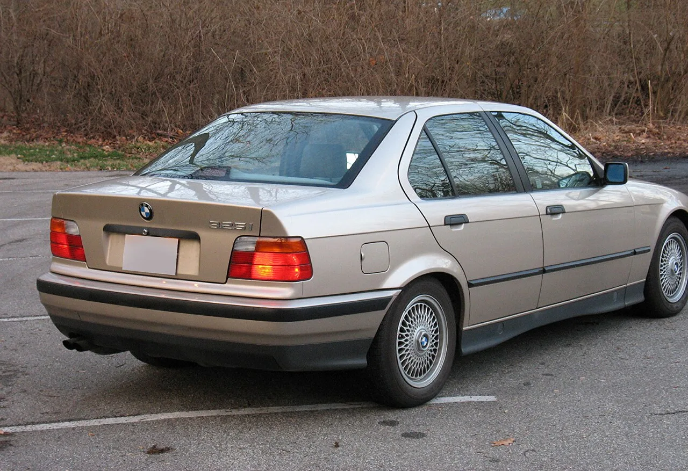
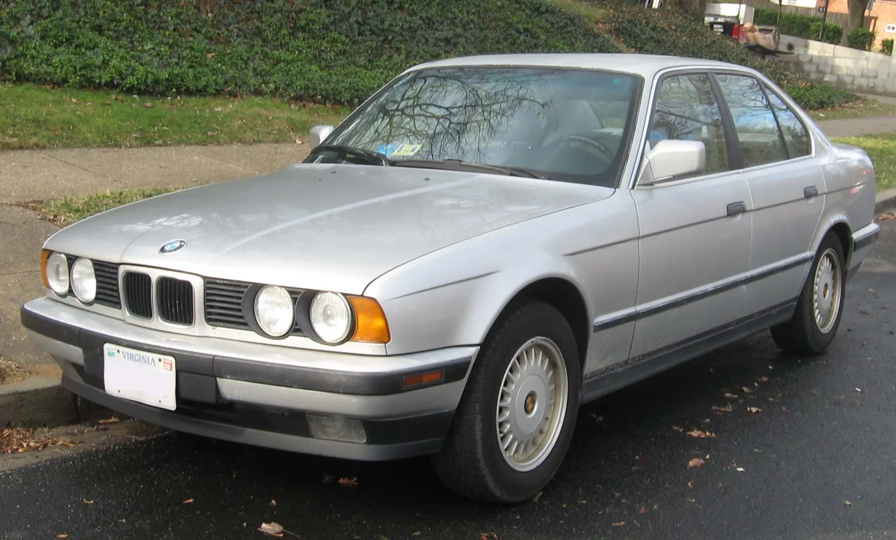

▲ BMW E36 325i — M50B25 직렬 6기통 엔진을 얹은 1990년대 초반 3시리즈로, 지금도 저렴하게 클래식 BMW를 시작할 수 있는 모델로 꼽힌다
클래식카 시장에서 BMW 3시리즈의 전설적인 세대, E30 M3의 몸값은 이미 최근 6개월 평균 9만7,235달러(약 1억 3,200만원)까지 치솟았습니다. 평범한 애호가가 접근하기엔 부담스러운 가격입니다. 하지만 같은 시대, 같은 계보의 엔진을 얹은 형제 모델들은 아직 문턱이 낮습니다. E36 325i와 E34 525i에 들어간 M50B25 직렬 6기통 엔진이 그 답입니다.
1. '마지막으로 단순했던' 엔진이라는 평가
M50B25는 1990~1992년 사이 생산된 2.5리터 직렬 6기통 자연흡기 엔진입니다. 최고출력 189마력, 최대토크 181lb-ft(약 24.5kg·m)를 내며, 주철 블록에 알루미늄 실린더 헤드를 얹은 구조입니다. 이후 BMW 엔진들이 점점 복잡한 전자 제어 시스템을 도입한 것과 달리, M50B25는 상대적으로 단순한 설계를 유지한 마지막 세대로 평가받습니다. 이 단순함 덕분에 정비가 쉽고, 직접 손보려는 오너들 사이에서 "BMW가 마지막으로 정직했던 엔진"이라는 평가까지 나옵니다.
2. 30만마일의 근거 — 실제 사례들

▲ E36 325i 후면부 — 정기적인 정비만 이뤄지면 30만마일(약 48만km) 이상 버티는 사례가 흔하다
M50B25의 내구성을 뒷받침하는 사례는 단순한 소문이 아닙니다. 여러 오너 커뮤니티에서 30만마일(약 48만km) 이상을 주행한 개체들이 다수 보고됐고, 한 E34 오너는 42만6,000마일(약 68만km)까지 이 엔진을 운행했다고 밝히기도 했습니다. 여기에 실린더 헤드 스터드를 업그레이드하면 안전하게 400마력까지 끌어올릴 수 있는 튜닝 잠재력까지 갖추고 있어, 순정 상태의 신뢰성과 개조 여지를 동시에 원하는 애호가들에게 매력적인 선택지로 꼽힙니다.
3. 유일한 약점 — 플라스틱 냉각 부품
완벽한 엔진은 아닙니다. M50B25의 가장 잘 알려진 약점은 플라스틱 소재의 워터펌프 임펠러와 서모스탯 하우징입니다. 시간이 지나면 이 부품들이 열화되면서 냉각 성능이 떨어지고, 방치하면 알루미늄 실린더 헤드 손상이나 헤드 개스킷 파손으로 이어질 수 있습니다. 다행히 해법은 간단합니다. 금속제 워터펌프(약 50달러, 약 7만원)와 금속제 서모스탯 하우징(약 30달러, 약 4만원)으로 교체하면 대부분의 냉각 관련 문제를 예방할 수 있습니다. 클래식 BMW를 구매할 때 이 부품들의 교체 이력부터 확인하는 것이 정석으로 통하는 이유입니다. 다만 30만마일이라는 수치를 '관리 안 해도 되는 엔진'으로 오해해서는 곤란합니다. 방치되거나 혹사당한 개체는 15만~20만마일 구간에서 오버홀(엔진 전면 분해 정비)이 필요할 수 있으며, 앞서 소개한 30만마일 이상 사례들은 어디까지나 냉각 계통 관리 등 기본적인 정비가 꾸준히 이뤄진 경우에 해당합니다.
4. E34 525i — 세단 형제의 선택지

▲ BMW E34 525i — 같은 M50B25 엔진을 얹은 준대형 세단으로, 3시리즈보다 여유로운 실내 공간을 원하는 이들에게 대안이 된다
같은 엔진을 공유하는 E34 525i는 3시리즈보다 한 체급 위인 5시리즈 세단입니다. 현재 평균 시세는 약 1만815달러(약 1,470만원) 수준으로, E36보다도 오히려 접근성이 좋은 편입니다. 준대형 세단 특유의 여유로운 실내 공간을 원하면서도 같은 신뢰성 있는 엔진을 원하는 구매자라면, E36 대신 E34를 고려해볼 만합니다.

▲ 클래식 BMW 특유의 멀티스포크 휠 — 순정 상태를 유지한 매물일수록 향후 가치 방어에 유리하다
5. 지금이 마지막 기회일 수 있는 이유
M3의 몸값이 계속 오르는 동안, 같은 엔진 계보를 공유하는 이 형제 모델들의 가격도 서서히 따라 오르고 있습니다. "M 배지 없이도 정직한 BMW를 타고 싶다"는 이들에게 남은 창은 점점 좁아지고 있는 셈입니다.